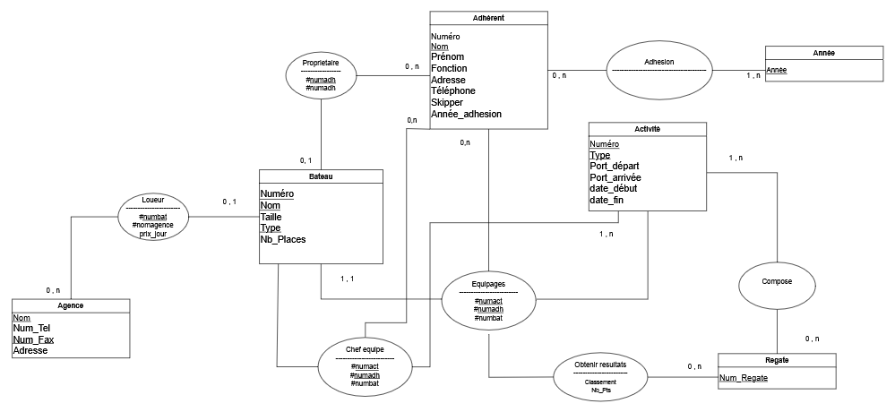

Conception relationnelle & Implémentation SQL - 2025-2026
Création d'une base de données relationnelle complète nommée "Le Tourmentin" en SQL. Le projet couvre la modélisation conceptuelle (MCD / SEA), la traduction en schéma relationnel (MLD / SLR), et l'implémentation avec scripts SQL complets.
SELECT a.nom, a.prenom
FROM adherent a
JOIN cotisation c ON a.numadh = c.numadh
WHERE c.anneecot = 2017 AND c.paye = 'non';SELECT a.nom, ROUND(AVG(c.montant), 2) AS cotis_moy
FROM adherent a
JOIN cotisation c ON a.numadh = c.numadh
GROUP BY a.nom
ORDER BY a.nom;SELECT b.numbat, SUM(p.points) AS total_points
FROM bateau b
JOIN participation p ON b.numbat = p.numbat
JOIN activite a ON p.numact = a.numact
WHERE a.numact = 2
GROUP BY b.numbat
ORDER BY b.numbat;ALTER TABLE loueur ADD COLUMN prixlocation numeric(5,2);
UPDATE loueur SET prixlocation = 100 WHERE numbat IN (SELECT numbat FROM bateau WHERE nbplaces < 7);
UPDATE loueur SET prixlocation = 120 WHERE numbat IN (SELECT numbat FROM bateau WHERE nbplaces >= 7);Livrables :
Compétences :
Structure complète de la base de données
